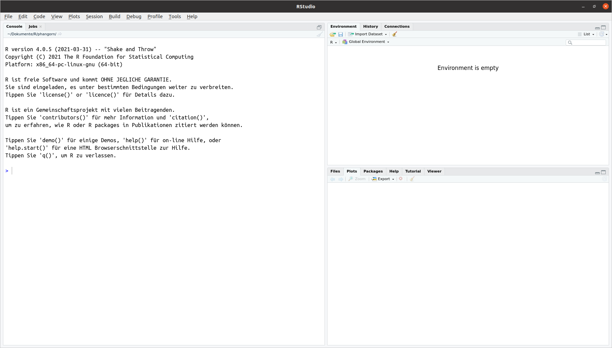

Introducing R and RStudio
Klaus Schliep
Mai 17, 2021
01-introduction.RmdThis class is based on the https://datacarpentry.org/genomics-r-intro. Mainly just rendered differently.
Getting ready to use R for the first time
In this lesson we will take you through the very first things you need to get R working.
A Brief History of R
R has been around since 1995, and was created by Ross Ihaka and Robert Gentleman at the University of Auckland, New Zealand. R is based off the S programming language developed at Bell Labs and was developed to teach intro statistics.
Advantages of using R
At more than 20 years old, R is fairly mature and growing in popularity. However, programming isn’t a popularity contest. Here are key advantages of analyzing data in R:
- R is open source. This means R is free - an advantage if you are at an institution where you have to pay for your own MATLAB or SAS license. Open source, is important to your colleagues in parts of the world where expensive software in inaccessible. It also means that R is actively developed by a community (see r-project.org), and there are regular updates.
- R is widely used. Ok, maybe programming is a popularity contest. Because, R is used in many areas (not just bioinformatics), you are more likely to find help online when you need it. Chances are, almost any error message you run into, someone else has already experienced.
- R is powerful. R runs on multiple platforms (Windows/MacOS/Linux). It can work with much larger datasets than popular spreadsheet programs like Microsoft Excel, and because of its scripting capabilities is far more reproducible. Also, there are thousands of available software packages for science, including genomics and other areas of life science.
Discussion: Your experience
What has motivated you to learn R? Have you had a research question for which spreadsheet programs such as Excel have proven difficult to use, or where the size of the data set created issues?
Introducing RStudio
In these lessons, we will be making use of a software called RStudio, an Integrated Development Environment (IDE). RStudio, like most IDEs, provides a graphical interface to R, making it more user-friendly, and providing dozens of useful features.
Open RStudio and the interface should look similar to this:

Create an RStudio project
One of the first benefits we will take advantage of in RStudio is something called an RStudio Project. An RStudio project allows you to more easily:
- Save data, files, variables, packages, etc. related to a specific analysis project
- Restart work where you left off
- Collaborate, especially if you are using version control such as git.
- To create a project, go to the File menu, and click New Project….

In the window that opens select New Directory, then New Project. For “Directory name:” enter dc_genomics_r. For “Create project as subdirectory of”, you may leave the default, which is your home directory “~”.
Finally click Create Project. In the “Files” tab of your output pane (more about the RStudio layout in a moment), you should see an RStudio project file, dc_genomics_r.Rproj. All RStudio projects end with the “.Rproj” file extension.
Creating your first R script
Now that we are ready to start exploring R, we will want to keep a record of the commands we are using. To do this we can create an R script:
Click the File menu and select New File and then R Script. Before we go any further, save your script by clicking the save/disk icon that is in the bar above the first line in the script editor, or click the File menu and select save. In the “Save File” window that opens, name your file “genomics_r_basics”. The new script genomics_r_basics.R should appear under “files” in the output pane. By convention, R scripts end with the file extension .R.
Overview and customization of the RStudio layout
Here are the major windows (or panes) of the RStudio environment:

-
Source: This pane is where you will write/view R scripts. Some outputs (such as if you view a dataset using
View()) will appear as a tab here. - Console/Terminal: This is actually where you see the execution of commands. This is the same display you would see if you were using R at the command line without RStudio. You can work interactively (i.e. enter R commands here), but for the most part we will run a script (or lines in a script) in the source pane and watch their execution and output here. The “Terminal” tab give you access to the BASH terminal (the Linux operating system, unrelated to R).
- Environment/History: Here, RStudio will show you what datasets and objects (variables) you have created and which are defined in memory. You can also see some properties of objects/datasets such as their type and dimensions. The “History” tab contains a history of the R commands you’ve executed R.
- Files/Plots/Packages/Help: This multipurpose pane will show you the contents of directories on your computer. You can also use the “Files” tab to navigate and set the working directory. The “Plots” tab will show the output of any plots generated. In “Packages” you will see what packages are actively loaded, or you can attach installed packages. “Help” will display help files for R functions and packages.
Tip: Uploads and downloads in the cloud
In the “Files” tab you can select a file and download it from your cloud instance (click the “more” button) to your local computer. Uploads are also possible.
All of the panes in RStudio have configuration options. For example, you can minimize/maximize a pane, or by moving your mouse in the space between panes you can resize as needed. The most important customization options for pane layout are in the View menu. Other options such as font sizes, colors/themes, and more are in the Tools menu under Global Options.
You are working with R
Although we won’t be working with R at the terminal, there are lots of reasons to. For example, once you have written an RScript, you can run it at any Linux or Windows terminal without the need to start up RStudio. We don’t want you to get confused - RStudio runs R, but R is not RStudio. For more on running an R Script at the terminal see this Software Carpentry lesson.
Using functions in R, without needing to master them
A function in R (or any computing language) is a short program that takes some input and returns some output. Functions may seem like an advanced topic (and they are), but you have already used at least one function in R. getwd() is a function! The next sections will help you understand what is happening in any R script.
Exercise: What do these functions do?
Try the following functions by writing them in your script. See if you can guess what they do, and make sure to add comments to your script about your assumed purpose. -
dir()-sessionInfo()-date()-Sys.time()
You have hopefully noticed a pattern - an R function has three key properties: - Functions have a name (e.g. dir, getwd); note that functions are case sensitive! - Following the name, functions have a pair of () - Inside the parentheses, a function may take 0 or more arguments
An argument may be a specific input for your function and/or may modify the function’s behavior. For example the function round() will round a number with a decimal:
# This will round a number to the nearest integer
round(3.14)## [1] 3Getting help with function arguments
What if you wanted to round to one significant digit? round() can do this, but you may first need to read the help to find out how. To see the help (In R sometimes also called a “vignette”) enter a ? in front of the function name:
?round()The “Help” tab will show you information (often, too much information). You will slowly learn how to read and make sense of help files. Checking the “Usage” or “Examples” headings is often a good place to look first. If you look under “Arguments,” we also see what arguments we can pass to this function to modify its behavior. You can also see a function’s argument using the args() function:
args(round)## function (x, digits = 0)
## NULLround() takes two arguments, x, which is the number to be rounded, and a digits argument. The = sign indicates that a default (in this case 0) is already set. Since x is not set, round() requires we provide it, in contrast to digits where R will use the default value 0 unless you explicitly provide a different value. We can explicitly set the digits parameter when we call the function:
round(3.14159, digits = 2)## [1] 3.14Or, R accepts what we call “positional arguments”, if you pass a function arguments separated by commas, R assumes that they are in the order you saw when we used args(). In the case below that means that x is 3.14159 and digits is 2.
round(3.14159, 2)## [1] 3.14Finally, what if you are using ? to get help for a function in a package not installed on your system, such as when you are running a script which has dependencies.
?geom_point()will return an error:
Error in .helpForCall(topicExpr, parent.frame()) :
no methods for ‘geom_point’ and no documentation for it as a functionUse two question marks (i.e. ??geom_point()) and R will return results from a search of the documentation for packages you have installed on your computer in the “Help” tab. Finally, if you think there should be a function, for example a statistical test, but you aren’t sure what it is called in R, or what functions may be available, use the help.search() function.
Exercise: Searching for R functions
Use
help.search()to find R functions for the following statistical functions. Remember to put your search query in quotes inside the function’s parentheses.
We will discuss more on where to look for the libraries and packages that contain functions you want to use. For now, be aware that two important ones are CRAN - the main repository for R, and Bioconductor - a popular repository for bioinformatics-related R packages.
RStudio contextual help
Here is one last bonus we will mention about RStudio. It’s difficult to remember all of the arguments and definitions associated with a given function. When you start typing the name of a function and hit the Tab key, RStudio will display functions and associated help:

Once you type a function, hitting the Tab inside the parentheses will show you the function’s arguments and provide additional help for each of these arguments.

Installing packages
from CRAN (https://cran.r-project.org/)
The Comprehensive R Archive network (CRAN) is a network of servers that stores R, documentation, and many of the packages available for R. To date there are over 170000 packages on CRAN, these packages can be installed by running the install.packages() command in an R terminal. For example, to install the ape package, run the following command in an R terminal:
install.packages("ape")To update all your installed packages just type:
update.packages()Do not do it now!!
from Bioconductor
Bioconductor is another archive of R packages specific to bioinformatics and genomics. This archive is maintained by the Bioconductor core team and is updated bi-annually.
# Install biocManager if it's not already there
if (!requireNamespace("BiocManager"))
install.packages("BiocManager") # from CRAN
# Install core bioconductor packages
BiocManager::install()
# Install specific bioconductor packages
BiocManager::install("GenomicFeatures")
# Upgrade installed bioconductor packages
BiocManager::install()